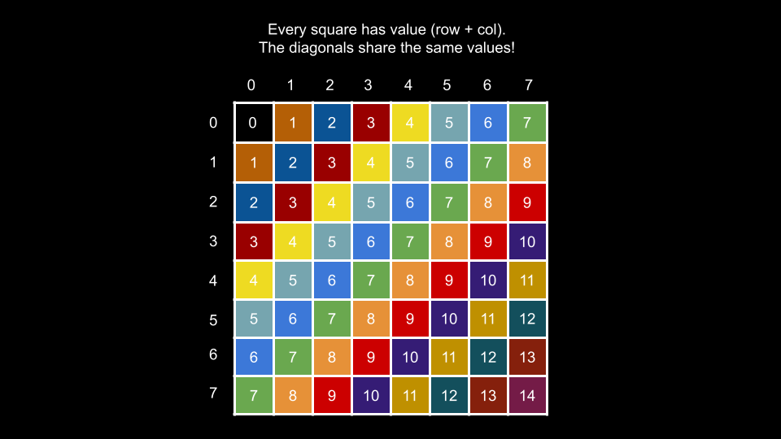
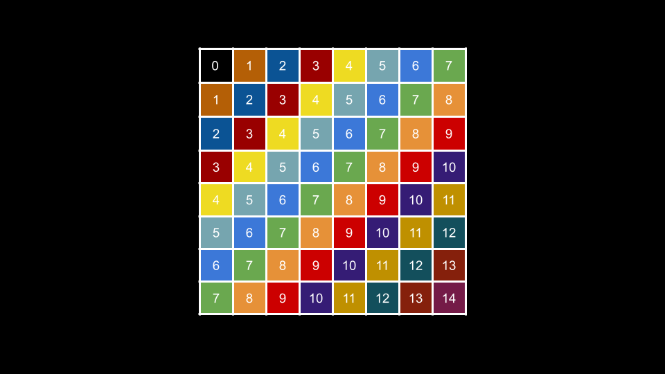
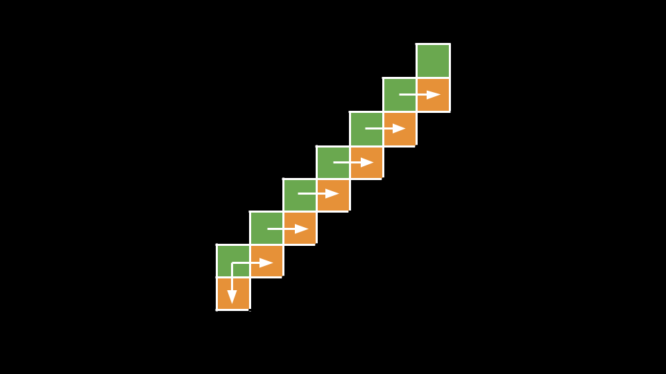

Approach 1: Group Elements by the Sum of Row and
Column Indices
Intuition
The crux of the problem is figuring out how to identify the diagonals and how to iterate over them. We will make use
of an important property of diagonals in this approach.
Let's say you are currently at the start of a diagonal (bottom-left) and your coordinates are row, col.
How do you get to the next value in the diagonal? You go up and right. By going up, you move to row - 1.
By going right, you move to col + 1. That is, our row decreases by 1, and our
col increases by 1.
This is true for any given point in any given diagonal. If we were to consider the sum row, col, it
would be constant along the diagonal since the -1 from moving up cancels out the +1 from
moving right!

As you can see in the above image, every square is annotated with row + col. Each diagonal shares the
same values.
For each square, we will use the sum row + col as an identifier to the diagonal that it belongs to. We
will use a hash map groups where groups[x] is a list of all values that appear in the
diagonal with identifier x.
To collect the cells on each diagonal in the correct order, we will iterate through each row from left to right
starting with the bottom row. The reason we choose the bottom-up, left-to-right order is that the diagonals move
upward and to the right, so by iterating to the upper right, we will visit the squares in the correct order.
Once we have populated groups, we simply need to iterate over the identifiers and add each list to our
answer. Notice that conveniently, the order in which we visit the diagonals is the same as the identifier order!
What we mean by this is that the first diagonal we traverse is 0, then 1, then
2, and so on.
Thus, we can use an integer curr initialized to 0 that represents the current diagonal we
are adding to our answer. We add groups[curr] to the answer, then increment curr, and
repeat until curr is no longer in groups.
Algorithm
Initialize a hash map groups.
Iterate row from nums.length - 1 to 0:
Iterate col from 0 until groups[row].length:
Calculate diagonal = row + col.
Add nums[row][col] to groups[diagonal].
Initialize the answer list ans and curr = 0.
While curr is in groups:
Add all the elements of groups[curr] to ans in order.
Increment curr.
Return ans.
Implementation
Java
class Solution {
public int[] findDiagonalOrder(List> nums) {
Map> groups = new HashMap();
int n = 0;
for (int row = nums.size() - 1; row >= 0; row--) {
for (int col = 0; col < nums.get(row).size(); col++) {
int diagonal = row + col;
if (!groups.containsKey(diagonal)) {
groups.put(diagonal, new ArrayList());
}
groups.get(diagonal).add(nums.get(row).get(col));
n++;
}
}
int[] ans = new int[n];
int i = 0;
int curr = 0;
while (groups.containsKey(curr)) {
for (int num : groups.get(curr)) {
ans[i] = num;
i++;
}
curr++;
}
return ans;
}
}
C++
class Solution {
public:
vector findDiagonalOrder(vector>& nums) {
unordered_map> groups;
for (int row = nums.size() - 1; row >= 0; row--) {
for (int col = 0; col < nums[row].size(); col++) {
int diagonal = row + col;
groups[diagonal].push_back(nums[row][col]);
}
}
vector ans;
int curr = 0;
while (groups.find(curr) != groups.end()) {
for (int num : groups[curr]) {
ans.push_back(num);
}
curr++;
}
return ans;
}
};
Python3
class Solution:
def findDiagonalOrder(self, nums: List[List[int]]) -> List[int]:
groups = defaultdict(list)
for row in range(len(nums) - 1, -1, -1):
for col in range(len(nums[row])):
diagonal = row + col
groups[diagonal].append(nums[row][col])
ans = []
curr = 0
while curr in groups:
ans.extend(groups[curr])
curr += 1
return ans
Complexity Analysis
Given nnn
as the number of integers in grid,
Time complexity: O(n)O(n)O(n)
We iterate over each of the nnn integers to populate groups,
then we iterate over them again to populate ans.
Space complexity: O(n)O(n)O(n)
The values of groups are lists that together will store exactly nnn integers, thus using O(n)O(n)O(n) space.
Approach 2: Breadth First Search
Intuition
In the previous approach, we require two passes. The first pass populates groups, and the second pass
populates ans. Can we do better, perhaps solving the problem in one pass?
Yes! Let's think about the grid as a graph. Each square is a node, and we can imagine each node having an edge to the
squares below and to the right (if they exist). Let's take a look at the diagonal image again:

As you can see, a node with identifier x has edges to nodes with identifier x + 1. If we
consider the top-left square 0, 0 as a "source" node, then each square's identifier is exactly equal to
its distance from the source. This allows us to visit the diagonals in order using BFS!
If you are not familiar with BFS, please check out the relevant LeetCode
Explore Card.
We start a BFS from 0, 0. At each node row, col, we first push row + 1, col to
the queue and then row, col + 1. Note that we only add a square to the queue if it both exists and has
not been visited yet.
How do we know if a square has been visited yet? We could use a hash set to keep track of visited squares, but there
is a simpler way. We only need to consider the square row + 1, col (down) if we are at the start of a
diagonal. Otherwise, for every other square on the diagonal, the square below it has already been visited by the
right edge of the previous square.

The level-wise nature of BFS will ensure that we visit all squares in a diagonal with identifier x
before we visit any square in a diagonal with identifier x + 1. This means we will visit the diagonals
in the correct order. Because we add the square row + 1, col before row, col + 1, we will
also traverse over each diagonal in the correct order as well. This means our entire BFS will traverse the input in
the same order as the answer, allowing us to solve the problem in one pass!
Algorithm
Initialize a queue with (0, 0) and the answer list ans.
While queue is not empty:
Remove (row, col) from queue.
Add nums[row][col] to ans.
If col == 0 and row + 1 is in bounds, add (row + 1, col) to
queue.
If col + 1 is in bounds for the current row, add (row, col + 1) to
queue.
Return ans.
Implementation
Java
class Solution {
public int[] findDiagonalOrder(List> nums) {
Queue> queue = new LinkedList();
queue.offer(new Pair(0, 0));
List ans = new ArrayList();
while (!queue.isEmpty()) {
Pair p = queue.poll();
int row = p.getKey();
int col = p.getValue();
ans.add(nums.get(row).get(col));
if (col == 0 && row + 1 < nums.size()) {
queue.offer(new Pair(row + 1, col));
}
if (col + 1 < nums.get(row).size()) {
queue.offer(new Pair(row, col + 1));
}
}
// Java needs conversion
int[] result = new int[ans.size()];
int i = 0;
for (int num : ans) {
result[i] = num;
i++;
}
return result;
}
}
C++
class Solution {
public:
vector findDiagonalOrder(vector>& nums) {
queue> queue;
queue.push({0, 0});
vector ans;
while (!queue.empty()) {
auto [row, col] = queue.front();
queue.pop();
ans.push_back(nums[row][col]);
if (col == 0 && row + 1 < nums.size()) {
queue.push({row + 1, col});
}
if (col + 1 < nums[row].size()) {
queue.push({row, col + 1});
}
}
return ans;
}
};
Python3
class Solution:
def findDiagonalOrder(self, nums: List[List[int]]) -> List[int]:
queue = deque([(0, 0)])
ans = []
while queue:
row, col = queue.popleft()
ans.append(nums[row][col])
if col == 0 and row + 1 < len(nums):
queue.append((row + 1, col))
if col + 1 < len(nums[row]):
queue.append((row, col + 1))
return ans
Complexity Analysis
Given nnn
as the number of integers in grid,
Time complexity: O(n)O(n)O(n)
During the BFS, we visit each square once, performing O(1)O(1)O(1) work at each iteration.
Space complexity: O(n)O(\sqrt{n})O(n)
The extra space we use is for queue. The largest size queue will be is proportional
to the size of the largest diagonal.
Let's say you had a diagonal with a size of kkk
starting from the bottom left of the input and going to the top right. What are the fewest squares possible
that could support such a diagonal existing? The first square in the diagonal can be the only square in its
row. The second square in the diagonal needs one square to its left. The third square in the diagonal needs
two squares to its left, and so on.
As you can see in the above image, the green diagonal requires many squares to its left to support its
existence. In fact, we can notice that if we extended the image to a square, we would have a grid of size
k∗kk * kk∗k.
That means to support a diagonal of size kkk,
we require k22=O(k2)\dfrac{k^2}{2} = O(k^2)2k2=O(k2) squares.
The conclusion is that a grid of size O(k2)O(k^2)O(k2) can only support a diagonal of size kkk. In our
problem, we defined the input grid to have a size of nnn. Thus, the largest diagonal it could
support would be O(n)O(\sqrt{n})O(n).